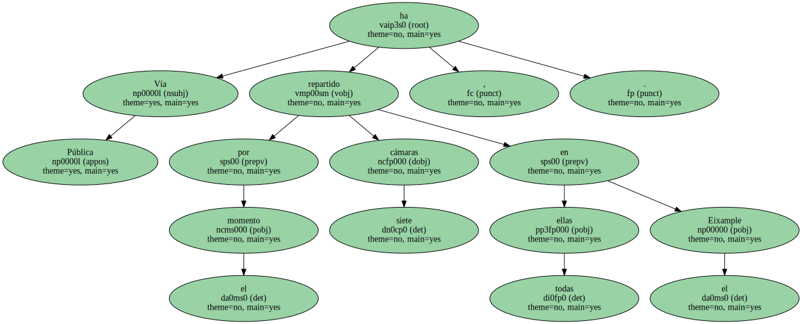
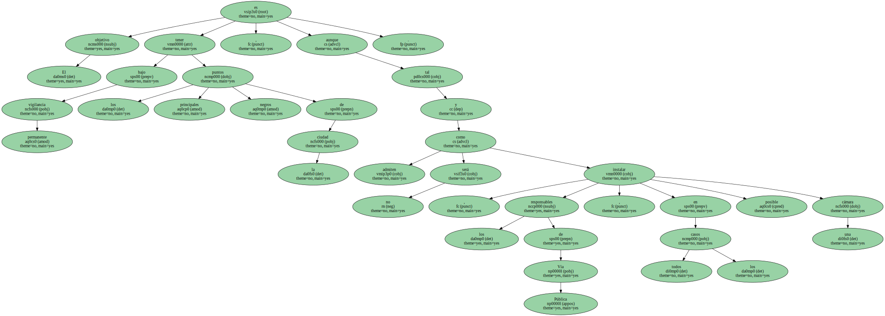
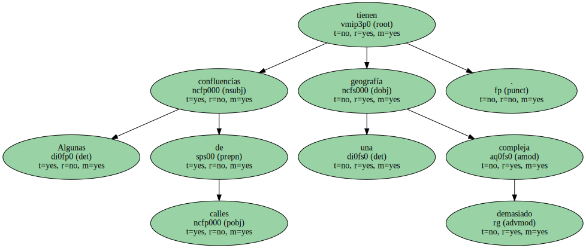

Vía Pública ha repartido por el momento siete cámaras , todas ellas en el Eixample.
El propósito a medio plazo , sin embargo , es contar con un mínimo de 60 unidades , con el objetivo de reducir la media de 50 muertes que cada año se producen en las calles de la ciudad.

El objetivo es tener bajo permanente vigilancia los principales puntos negros de la ciudad , aunque , tal y como admiten los responsables de Vía Pública , en todos los casos no será posible instalar una cámara.
Algunas confluencias de calles tienen una geografía demasiado compleja.
